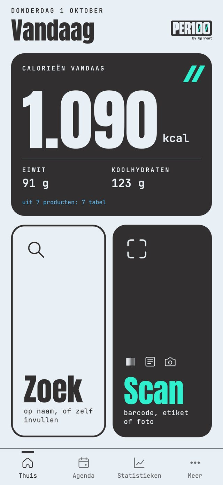
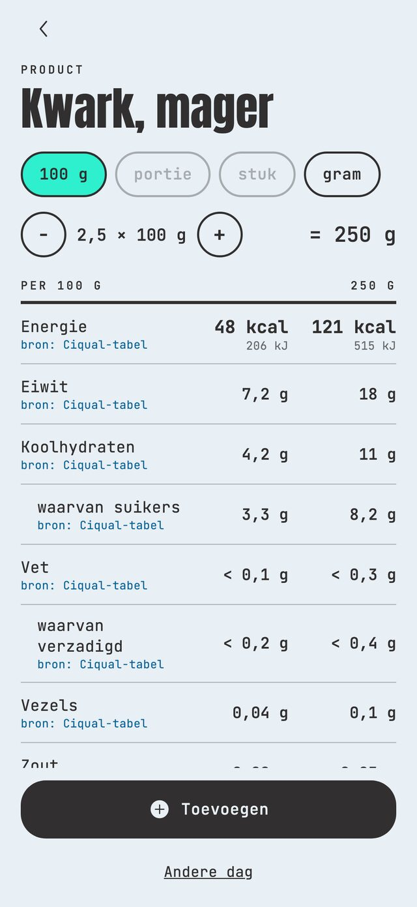
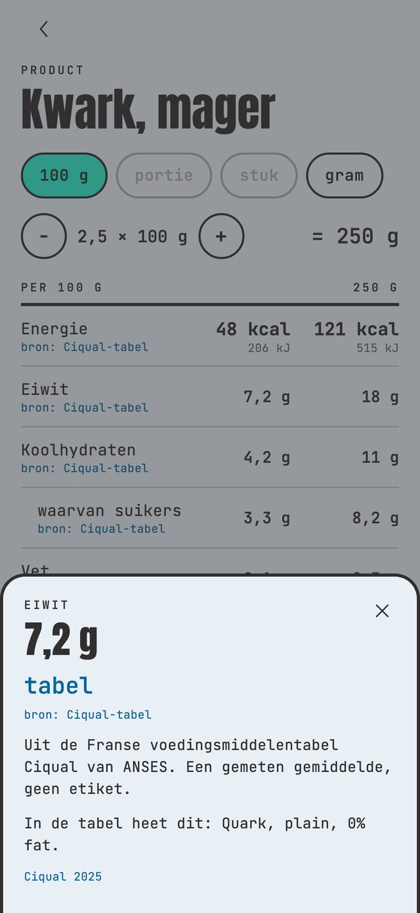
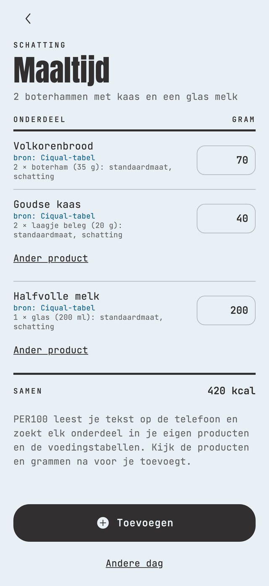
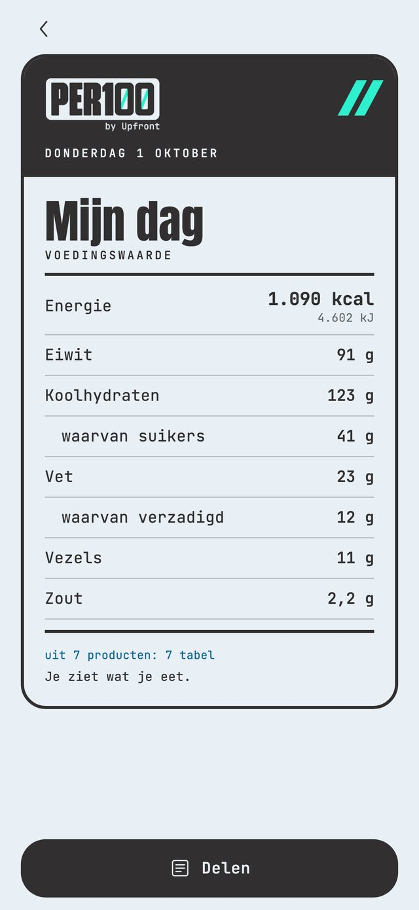
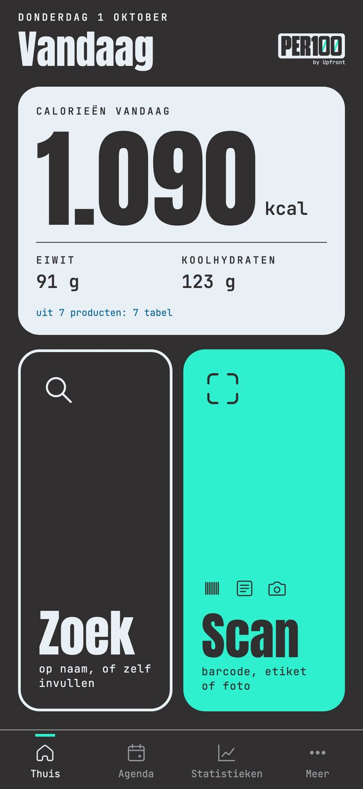

App Development · PER100
Een calorie- en eiwittracker die onder elk getal zet waar het vandaan komt, en verder niets van je vindt. Je scant een product, zoekt het op of typt gewoon wat je at. Onder elk getal staat de bron: het etiket, Open Food Facts of een voedingstabel. Rekent de app zelf iets uit, dan staat dat er ook bij.

Ik maakte PER100 als examenproject Mediavormgeving, met Upfront als opdrachtgever: het sportvoedingsmerk dat alles wat je moet weten op de voorkant van de verpakking zet. PER100 doet dat voor alles wat je eet.
In mijn enquête onder 24 mensen scoorde de bron van een getal een 4,2 van 5, en het vertrouwen in hun huidige app een 3,0. Daarom zie je de bron in plaats van dat je hem leest: een blauw woord onder elk getal.
Geen rood en geen groen, geen reeksen of badges, alleen een neutrale telling. Een doel bestaat alleen als je het zelf invult. Wat voor die gebruiker veilig is, is voor de rest gewoon rustig.
Van de mensen die stopten met bijhouden, deden 9 van de 12 dat door de moeite. Dus staan barcode en etiket voorop, is zoeken de uitweg en kun je typen zoals je praat.
Geen verplicht account, geen analytics, geen gewichtslog en geen gezondheidsclaims. En geen Upfront-huisstijl: PER100 kreeg vier eigen kleuren, eigen letters en een eigen iconenset.




